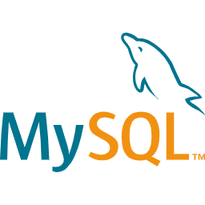

About
Saya Muhammad Saman. Mahasiswa kelahiran Tanah Grogot, 18 Januari 2023 ini sedang menempuh studi S1 Informatika di Institut Teknologi Kalimantan (ITK). Saya mempunyai minat terhadap perkembangan teknologi informasi. Maka saya tertarik untuk belajar mengembangkan aplikasi berbasis web dan mobile yang berkontribusi langsung terhadap revolusi industri 5.0
Pendidikan
1. Institut Teknologi Kalimantan (ITK) - Agustus 2021 - Sekarang
- Program Studi: Informatika
- IPK Terakhir: 3.49
2. MAN Insan Cendekia Paser - Juli 2018 - Juni 2021
- Jurusan Matematika dan Ilmu Alam
Pengalaman Kerja
1. Asisten Laboratorium, ITK - September 2022 - Desember 2022
- Mengajar implementasi algoritma & pemrograman dalam bahasa
Python.
- Mendampingi dan mengevaluasi pekerjaan pada tugas besar untuk mata
kuliah algoritma & pemrograman.
2. Asisten Laboratorium, ITK - Februari 2023 - Juni 2023
- Mengajar implementasi pemrograman berorientasi objek dalam bahasa
Java.
- Mendampingi dan mengevaluasi pekerjaan pada tugas besar untuk mata
kuliah algoritma & pemrograman.
3. Freelancer, ITK - Juni 2023 - September 2023
- Mengembangkan situs web landing page Semiotika 2023 menggunakan
teknologi React JS dan Tailwind CSS.
Stack Teknologi
-

- 
-